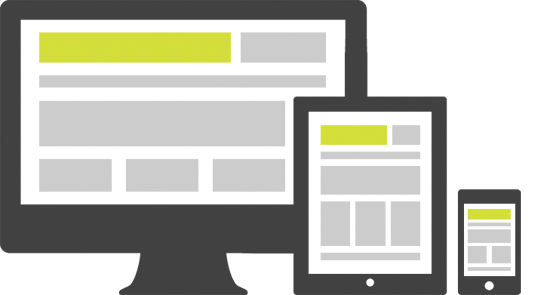
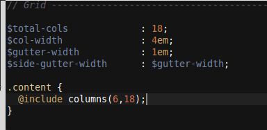
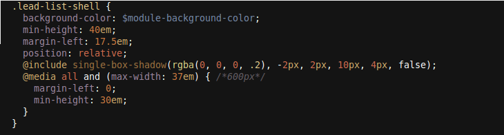
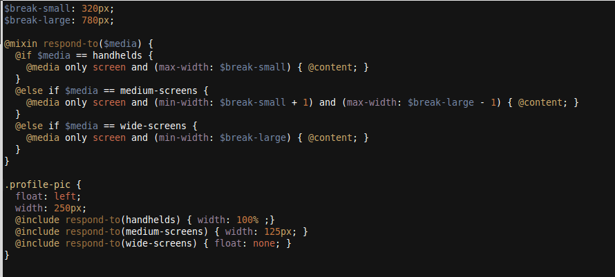

Responsive Design
on Signature
by ckung & jgergen

What does responsive mean?
Adaptive because it adapts gracefully to all screen sizes: large monitors, netbooks, tablets, phones
- fluid width
- media queries
- mobile design
- scaling images
Why Responsive ?
The most important reason:Users expect their content to follow them from the desktop to their devices. We wanted to provide the same access and functionality with a very similar experience.
Benefits of Responsive
vs Other Mobile Stratgey
- No delay between desktop support and mobile support
- Works on all types of devices, not just a single platform
- Single code-base means it's easy to maintain feature party between experiences as we develop new features
- building a fluid site plus fine-tuned control on an element level means a better experience even on desktop (i.e. large monitors as well as devices)
But lets briefly talk about SASS

Bajillion fluid grid libraries. We tried Compass SUSY. Great! Because I don't like math.
boom. "column" calculates percentages for you.
Dumped it .. too much overhead, doesn't really fit our design.
Imho, grids are perfect for content-heavy websites.
Instead use :
- Percentages for width
- EMs for font and padding
- Media queries when it can't be fluid
EM! Use em!
- Works for IE6 zoom
- Cascading
- Works for media query zoom
Formula: size in pixels / parent size in pixels
Example: 12px / 16px = .75em
Ems Cascade
this is 1.2em spanthis is 1.2em spanthis is 1.2em span
Px dont
this is 20px spanthis is 20px spanthis is 20px span
Ems in media queries.
 *demo*Future of media queries in SASS 3.2
Other methods thus far ...
- jquery's on touch start
- modernizer's touch class
- -webkit-transform: translateZ(0);
Surprises!
- screen size ≠ touch
- touch and gestures affected some design decisions, such as functionality on hover, etc
- zooming
- performance issues
- devices lie
Design Findings
- design for all widths at the same time
- it's difficult to articulate the delta between screen-sizes and input devices in comps, so the strategy forces closer designer/developer collaboration (but this is great!)
- SASS really helps
- the design changes more significantly during the course of the build than usual, so finding the right moment to optimize is difficult (but this feels like a familiar problem)
Does it work?
It's definitely too early to say for sure…. but early findings very good.
Users were able to run through scenarios such as "A recruiter just called you to schedule and interview for a job you applied to last week. Find the job and add the interview" fairly fluidly and naturally.
Is responsive the end-all be-all for mobile?
No.
There are still many cases for native apps or mobile sites depending on the site, and the functionality.
But…
It's a good idea anyway. It enforces good front-end practices and improves the experience in most cases that are difficult to cover with other mobile strategies.
Is it worth it?
Yes. The learning curve is not too steep and the cost after that point is usually minimal. It's definitely way cheaper than designing, building and maintaining separate sites & apps.